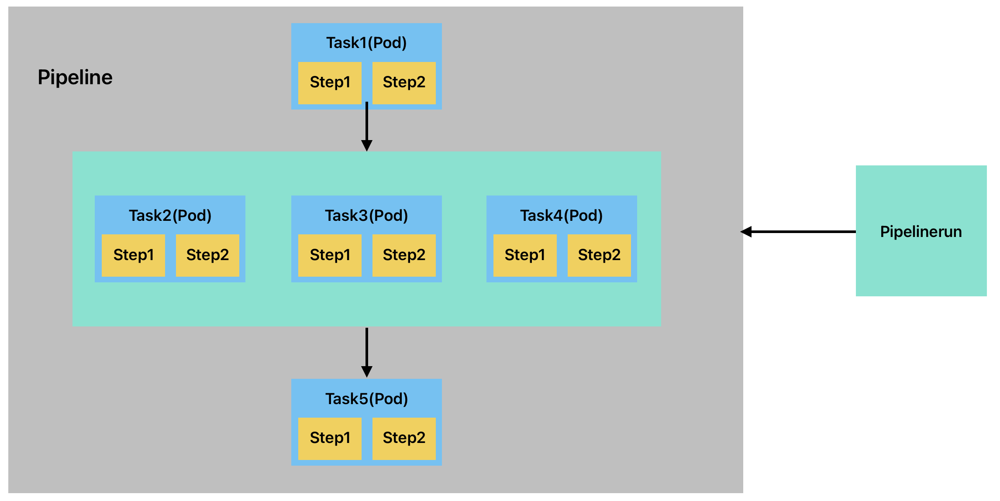

Tekton 基本概念
1、核心概念：K8s 原生的 CI/CD 引擎
Tekton 是 CNCF 孵化项目，以 K8s 为运行底座，将 CI/CD 流程抽象为可扩展的 API 资源。其设计哲学是 “一切皆资源”。
| 概念 | 描述 | 云原生价值 |
|---|---|---|
| Step | 每个 Step直接对应一个容器 |
容器化原子操作（独立隔离） |
| Task | Task是Pipeline的最小执行单元，其核心是 “完成一个具体的离散操作”, 每个Task对应一个Pod |
可复用的原子任务（K8s CRD） |
| Pipeline | Pipeline通过定义 “拉取 → 构建 → 测试 → 部署” 等阶段，让软件交付像工厂流水线一样高效可控 |
任务编排（支持并行 / 依赖） |
| Workspace | Workspace是连接 Task 和 Pipeline的核心组件，用于跨容器、跨任务共享数据。 |
跨任务文件共享（PVC 或 Volume） |
| Trigger | Triggers是实现 事件驱动流水线 的核心组件，用于自动响应外部事件（如代码提交、API 调用）触发 Pipeline执行。 |
事件驱动（Webhook/Git 推送） |
2、流水线架构

- 多个 Step (Container) 组成一个 Task (Pod) ，多个 Task 组成 Pipeline，Pipelinerun 来运行 Pipeline
- Task 是引用 Taskrun 来执行的，当 Pipelinerun 来运行 Pipeline 时会自动创建 Taskrun 来运行 Task
- Task 是依次执行的，Task1 完成再去执行下面的 Task2，Task3，Task4，这里 Task 是同时执行的，最后再执行 Task5，全程只要有一个容器执行失败，流水线就会从该处终止
- Step 也是依次执行，Step1 完成了才回去执行 Step2，如果 Step1 执行失败，则从 Step1 开始终止后续运行
Tekton 部署
1、安装 Tekton Pipelines
# 安装Pipeline
kubectl apply --filename https://storage.googleapis.com/tekton-releases/pipeline/latest/release.yaml
# 查看
kubectl get pods --namespace tekton-pipelines --watch
2、安装 Tekton Triggers
kubectl apply --filename \
https://storage.googleapis.com/tekton-releases/triggers/latest/release.yaml
kubectl apply --filename \
https://storage.googleapis.com/tekton-releases/triggers/latest/interceptors.yaml
3、安装 Tekton Dashboard
资源清单安装 Tekton Dashboard
要在 Kubernetes 集群上安装 Tekton Dashboard：
a)、运行以下命令安装 Tekton Dashboard：
# 只读模式
kubectl apply --filename https://storage.googleapis.com/tekton-releases/dashboard/latest/release.yaml
这将默认以只读模式安装仪表板。
# 读写模式
kubectl apply --filename https://storage.googleapis.com/tekton-releases/dashboard/latest/release-full.yaml
以前的版本可以在以下网址获取previous/$VERSION_NUMBER/*.yaml，例如
kubectl apply --filename https://storage.googleapis.com/tekton-releases/dashboard/previous/v0.32.0/release.yaml
要以读/写模式安装，请使用 release-full.yaml。
v0.31.0 及更早版本对发布清单使用了不同的命名方案：
| 模式 | 当前的 | v0.31.0 及更早版本 |
|---|---|---|
| 只读 | 发布.yaml | tekton-dashboard-release-readonly.yaml |
| 读/写 | 发布-full.yaml | tekton-仪表板-发布.yaml |
b)、使用以下命令监视安装，直到所有组件都显示Running状态：
kubectl get pods --namespace tekton-pipelines --watch
3、使用安装程序脚本安装 Tekton Dashboard
a)、以读/写模式安装最新版本
curl -sL https://raw.githubusercontent.com/tektoncd/dashboard/main/scripts/release-installer | \
bash -s -- install latest --read-write
b)、安装时可以访问命名空间的子集，而不是完整的集群访问权限：
curl -sL https://raw.githubusercontent.com/tektoncd/dashboard/main/scripts/release-installer | \
bash -s -- install latest --read-write --tenant-namespaces tenant-namespace1,tenant-namespace2
这会将--namespacesarg 添加到仪表板部署中，并在每个指定的命名空间中创建 RoleBindings，并将适当的角色授予仪表板服务帐户。
c)、安装并支持从外部源加载日志：
curl -sL https://raw.githubusercontent.com/tektoncd/dashboard/main/scripts/release-installer | \
bash -s -- install latest --read-write --external-logs <logs-provider-url>
访问 Tekton Dashboard
可以使用以下命令通过端口转发来访问 Tekton Dashboard：
# 只绑定了回环网卡，只能在127.0.0.1:9097访问
kubectl port-forward -n tekton-pipelines service/tekton-dashboard 9097:9097
# 显式指定绑定到所有接口（0.0.0.0）
kubectl port-forward -n tekton-pipelines --address 0.0.0.0 service/tekton-dashboard 9097:9097
然后在浏览器中打开 http://localhost:9097 即可访问 Tekton Dashboard。
4、安装 Tekton cli
下载地址：https://github.com/tektoncd/cli/releases